전기기사 (2018-08-19 기출문제)
1과목: 전기자기학
1. 전계 E의 x, y, z 성분을 Ex, Ey, Ez라 할 때 divE는?(오류 신고가 접수된 문제입니다. 반드시 정답과 해설을 확인하시기 바랍니다.)
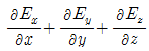
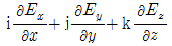
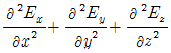
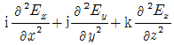
(정답률: 62%)

2. 동심 구형 콘덴서의 내외 반지름을 각각 5배로 증가시키면 정전용량은 몇 배로 증가하는가?
- 5
- 10
- 15
- 20
(정답률: 84%)
3. 자성체 경계면에 전류가 없을 때의 경계조건으로 틀린 것은?(오류 신고가 접수된 문제입니다. 반드시 정답과 해설을 확인하시기 바랍니다.)
- 자계 H의 접선성분 H1T=H2T
- 자속밀도 B의 법선성분 B1N=B2N
- 경계면에서 자력선의 굴절 (tanθ1/tanθ2) = (μ1/μ2)
- 전속밀도 D의 법선성분 D1N=D2N=(μ2/μ1)
(정답률: 78%)
4. 도체나 반도체에 전류를 흘리고 이것과 직각방향으로 자계를 가하면 이 두 방향과 직각방향으로 기전력이 생기는 현상을 무엇이라 하는가?
- 홀 효과
- 핀치 효과
- 볼타 효과
- 압전 효과
(정답률: 74%)
5. 판자석의 세기가 0.01Wb/m, 반지름이 5cm인 원형 판자석이 있다. 자석의 중심에서 축상 10cm인 점에서의 자위의 세기는 몇 AT 인가?
- 100
- 175
- 370
- 420
(정답률: 40%)
6. 평면도체 표면에서 d[m] 거리에 점전하 Q[C]이 있을 때 이 전하를 무한원점까지 운반하는데 필요한 일[J]은?
- Q2 / 4πε0d
- Q2 / 8πε0d
- Q2 / 16πε0d
- Q2 / 32πε0d
(정답률: 76%)
7. 유전율 ε, 전계의 세기 E인 유전체의 단위 체적에 축적되는 에너지는?
- E / 2ε
- εE / 2
- εE2 / 2
- ε2E2 / 2
(정답률: 83%)
8. 길이 l[m], 지름 d[m]인 원통이 길이 방향으로 균일하게 자화되어 자화의 세기가 J[Wb/m2]인 경우 원통 양단에서의 전자극의 세기[Wb]는?
- πd2J
- πdJ
- 4J / πd2
- πd2J / 4
(정답률: 55%)
9. 자기인덕턴스 L1, L2와 상호인덕턴스 M사이의 결합계수는? (단, 단위는 H이다.)
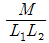
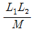
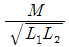
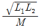
(정답률: 83%)
10. 진공 중에서 선전하 밀도 ρㅣ=6×10-8C/m인 무한히 긴 직선상 선전하가 x 축과 나란하고 z=2m 점을 지나고 있다. 이 선전하에 의하여 반지름 5m인 원점에 중심을 둔 구표면 S0를 통과하는 전기력선수는 약 몇 V/m인가?
- 3.1 × 104
- 4.8 × 104
- 5.5 × 104
- 6.2 × 104
(정답률: 33%)
11. 대지면에 높이 h[m]로 평행하게 가설된 매우 긴 선전하가 지면으로부터 받는 힘은?
- h에 비례
- h에 반비례
- h2에 비례
- h2에 반비례
(정답률: 72%)
12. 정전에너지, 전속밀도 및 유전상수 εr의 관계에 대한 설명중 틀린 것은?
- 굴절각이 큰 유전체는 εr이 크다.
- 동일 전속밀도에서는 εr이 클수록 정전에너지는 작아진다.
- 동일 정전에너지에서는 εr이 클수록 전속밀도가 커진다.
- 전속은 매질에 축적되는 에너지가 최대가 되도록 분포 된다.
(정답률: 64%)
13. σ=1℧/m, εs=6, μ=μ0인 유전체에 교류전압을 가할 때 변위전류와 전도전류의 크기가 같아지는 주파수는 약몇 Hz 인가?
- 3.0 × 109
- 4.2 × 109
- 4.7 × 109
- 5.1 × 109
(정답률: 38%)
14. 그 양이 증가함에 따라 무한장 솔레노이드의 자기인덕턴스 값이 증가하지 않는 것은 무엇인가?
- 철심의 반경
- 철심의 길이
- 코일의 권수
- 철심의 투자율
(정답률: 69%)
15. 단면적 S[m2], 단위 길이당 권수가 n0[회/m]인 무한히 긴 솔레노이드의 자기인덕턴스[H/m]는?(오류 신고가 접수된 문제입니다. 반드시 정답과 해설을 확인하시기 바랍니다.)
- μSn0
- μSn20
- μS2n0
- μS2n20
(정답률: 82%)
16. 비투자율 1000인 철심이 든 환상솔레노이드의 권수가 600회, 평균지름 20cm, 철심의 단면적 10cm2이다. 이 솔레노이드에 2A의 전류가 흐를 때 철심 내의 자속은 약몇 Wb 인가?
- 1.2 × 10-3
- 1.2 × 10-4
- 2.4 × 10-3
- 2.4 × 10-4
(정답률: 58%)
17. 3개의 점전하 Q1=3C, Q2=1C, Q3=-3C을 점 P1(1,0,0), P2(2,0,0), P3(3,0,0)에 어떻게 놓으면 원점에서 전계의 크기가 최대가 되는가?
- P1에 Q1, P2에 Q2, P3에 Q3
- P1에 Q2, P2에 Q3, P3에 Q1
- P1에 Q3, P2에 Q1, P3에 Q2
- P1에 Q3, P2에 Q2, P3에 Q1
(정답률: 69%)
18. 맥스웰의 전자방정식에 대한 의미를 설명한 것으로 틀린것은?
- 자계의 회전은 전류밀도와 같다.
- 자계는 발산하며, 자극은 단독으로 존재한다.
- 전계의 회전은 자속밀도의 시간적 감소율과 같다.
- 단위체적 당 발산 전속 수는 단위체적 당 공간전하 밀도와 같다.
(정답률: 74%)
19. 전기력선의 설명 중 틀린 것은?
- 전기력선은 부전하에서 시작하여 정전하에서 끝난다.
- 단위 전하에서는 1/ε0개의 전기력선이 출입한다.
- 전기력선은 전위가 높은 점에서 낮은 점으로 향한다.
- 전기력선의 방향은 그 점의 전계의 방향과 일치하며 밀도는 그 점에서의 전계의 크기와 같다.
(정답률: 79%)
20. 유전율이 ε=4ε0이고 투자율이 μ0인 비도전성 유전체에서 전자파 전계의 세기가 E(z,t)=ay377cos(109t-βz) [V/m]일 때의 자계의 세기 H는 몇 A/m 인가?
- -az2cos(109-βz)
- -ax2cos(109-βz)
- -az7.1×104cos(109t-βz)
- -ax7.1×104cos(109t-βz)
(정답률: 47%)
2과목: 전력공학
21. 변류기 수리 시 2차측을 단락시키는 이유는?
- 1차측 과전류 방지
- 2차측 과전류 방지
- 1차측 과전압 방지
- 2차측 과전압 방지
(정답률: 61%)
22. 1년 365일 중 185일은 이 양 이하로 내려가지 않는 유량은?
- 평수량
- 풍수량
- 고수량
- 저수량
(정답률: 75%)
23. 배전선의 전압조정장치가 아닌 것은?
- 승압기
- 리클로저
- 유도전압조정기
- 주상변압기 탭 절환장치
(정답률: 76%)
24. 발전기 또는 주변압기의 내부고장 보호용으로 가장 널리 쓰이는 것은?
- 거리계전기
- 과전류계전기
- 비율차동계전기
- 방향단락계전기
(정답률: 74%)
25. 그림과 같은 선로의 등가선간거리는 몇 m인가?
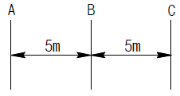
- 5
- 5√2
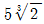
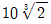
(정답률: 78%)
26. 서지파(진행파)가 서지 임피던스 Z1의 선로측에서 서지임피던스 Z2의 선로측으로 입사할 때 투과계수(투과파전압÷입사파 전압) b를 나타내는 식은?
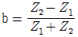
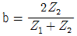
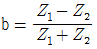
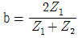
(정답률: 62%)
27. 3상 송전선로에서 선간단락이 발생하였을 때 다음 중 옳은 것은?
- 역상전류만 흐른다.
- 정상전류와 역상전류가 흐른다.
- 역상전류와 영상전류가 흐른다.
- 정상전류와 영상전류가 흐른다.
(정답률: 71%)
28. 송전계통의 안정도 향상 대책이 아닌 것은?
- 전압 변동을 적게 한다.
- 고속도 재폐로 방식을 채용한다.
- 고장시간, 고장전류를 적게 한다.
- 계통의 직렬 리액턴스를 증가시킨다.
(정답률: 82%)
29. 배전선로에 사고범위의 확대를 방지하기 위한 대책으로 적당하지 않은 것은?
- 선택접지계전방식 채택
- 자동고장 검출장치 설치
- 진상콘덴서 설치하여 전압보상
- 특고압의 경우 자동구분개폐기 설치
(정답률: 76%)
30. 화력발전소에서 재열기의 사용 목적은?
- 증기를 가열한다.
- 공기를 가열한다.
- 급수를 가열한다.
- 석탄을 건조한다.
(정답률: 76%)
31. 송전전력, 송전거리, 전선의 비중 및 전력손실률이 일정하다고 하면 전선의 단면적 A[mm2]와 송전전압 V[kV]와의 관계로 옳은 것은?
- A ∝ V
- A ∝ V2
- A ∝ 1/√V
- A ∝ 1/V2
(정답률: 72%)
32. 선로에 따라 균일하게 부하가 분포된 선로의 전력손실은 이들 부하가 선로의 말단에 집중적으로 접속되어 있을 때보다 어떻게 되는가?
- 1/2로 된다.
- 1/3로 된다.
- 2배로 된다.
- 3배로 된다.
(정답률: 66%)
33. 반지름 r [m]이고 소도체 간격 S인 4복도체 송전선로에서 전선 A, B, C가 수평으로 배열되어 있다. 등가 선간거리가 D(m)로 배치되고 완전 연가 된 경우 송전선로의 인덕턴스는 몇 mH/km 인가?
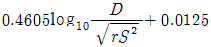
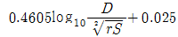
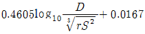
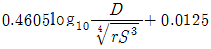
(정답률: 68%)
34. 최소 동작 전류 이상의 전류가 흐르면 한도를 넘은 양(量)과는 상관없이 즉시 동작하는 계전기는?
- 순한시 계전기
- 반한시 계전기
- 정한시 계전기
- 반한시 정한시 계전기
(정답률: 72%)
35. 최근에 우리나라에서 많이 채용되고 있는 가스절연개폐설비(GIS)의 특징으로 틀린 것은?
- 대기 절연을 이용한 것에 비해 현저하게 소형화 할 수 있으나 비교적 고가이다.
- 소음이 적고 충전부가 완전한 밀폐형으로 되어 있기 때문에 안정성이 높다.
- 가스 압력에 대한 엄중 감시가 필요하며 내부 점검 및 부품 교환이 번거롭다.
- 한랭지, 산악 지방에서도 액화 방지 및 산화 방지 대책이 필요 없다.
(정답률: 73%)
36. 송전선로에 복도체를 사용하는 주된 목적은?
- 인덕턴스를 증가시키기 위하여
- 정전용량을 감소시키기 위하여
- 코로나 발생을 감소시키기 위하여
- 전선 표면의 전위경도를 증가시키기 위하여
(정답률: 80%)
37. 송배전 선로의 전선 굵기를 결정하는 주요 요소가 아닌것은?
- 전압강하
- 허용전류
- 기계적 강도
- 부하의 종류
(정답률: 75%)
38. 기준 선간전압 23kV, 기준 3상 용량 5000kVA, 1선의 유도리액턴스가 15Ω일 때 %리액턴스는?
- 28.36%
- 14.18%
- 7.09%
- 3.55%
(정답률: 76%)
39. 망상(Network) 배전방식에 대한 설명으로 옳은 것은?
- 전압 변동이 대체로 크다.
- 부하 증가에 대한 융통성이 적다.
- 방사상 방식보다 무정전 공급의 신뢰도가 더 높다.
- 인축에 대한 감전사고가 적어서 농촌에 적합하다.
(정답률: 63%)
40. 3상용 차단기의 정격전압은 170kV이고 정격차단전류가 50kA일 때 차단기의 정격차단용량은 약 몇 MVA인가?
- 5000
- 10000
- 15000
- 20000
(정답률: 77%)
3과목: 전기기기
41. 3상 직권 정류자전동기에 중간 변압기를 사용하는 이유로 적당하지 않은 것은?
- 중간 변압기를 이용하여 속도 상승을 억제할 수 있다.
- 회전자 전압을 정류작용에 맞는 값으로 선정할 수 있다.
- 중간 변압기를 사용하여 누설 리액턴스를 감소할 수 있다.
- 중간 변압기의 권수비를 바꾸어 전동기 특성을 조정할 수 있다.
(정답률: 54%)
42. 변압기의 권수를 N이라고 할 때 누설리액턴스는?
- N에 비례한다.
- N2에 비례한다.
- N에 반비례한다.
- N2에 반비례한다.
(정답률: 69%)
43. 직류기의 온도상승 시험 방법 중 반환부하법의 종류가 아닌것은?
- 카프법
- 홉킨슨법
- 스코트법
- 블론델법
(정답률: 68%)
44. 단상 직권 정류자전동기에서 보상권선과 저항도선의 작용을 설명한 것으로 틀린 것은?
- 역률을 좋게 한다.
- 변압기 기전력을 크게 한다.
- 전기자 반작용을 감소시킨다.
- 저항도선은 변압기 기전력에 의한 단락전류를 적게 한다.
(정답률: 53%)
45. 일반적인 변압기의 손실 중에서 온도상승에 관계가 가장적은 요소는?
- 철손
- 동손
- 와류손
- 유전체손
(정답률: 55%)
46. 직류발전기의 병렬 운전에서 부하 분담의 방법은?
- 계자전류와 무관하다.
- 계자전류를 증가하면 부하분담은 감소한다.
- 계자전류를 증가하면 부하분담은 증가한다.
- 계자전류를 감소하면 부하분담은 증가한다.
(정답률: 61%)
47. 1차전압 6600V, 2차전압 220V, 주파수 60Hz, 1차권수 1000회의 변압기가 있다. 최대 자속은 약 몇 Wb인가?
- 0.020
- 0.025
- 0.030
- 0.032
(정답률: 65%)
48. 역률 100% 일 때의 전압 변동률 은 어떻게 표시되는 가?
- %저항강하
- %리액턴스강하
- %서셉턴스강하
- %임피던스강하
(정답률: 70%)
49. 3상 농형 유도전동기의 기동방법으로 틀린 것은?
- Y-△ 기동
- 전전압 기동
- 리액터 기동
- 2차 저항에 의한 기동
(정답률: 71%)
50. 직류 복권발전기의 병렬운전에 있어 균압선을 붙이는 목적은 무엇인가?
- 손실을 경감한다.
- 운전을 안정하게 한다.
- 고조파의 발생을 방지한다.
- 직권계자간의 전류증가를 방지한다.
(정답률: 65%)
51. 2방향성 3단자 사이리스터는 어느 것인가?
- SCR
- SSS
- SCS
- TRIAC
(정답률: 65%)
52. 15kVA, 3000/200V 변압기의 1차측 환산 등가 임피던스가 5.4+j6Ω 일 때, %저항강하 p와 %리액턴스강하 q는 각각 약 몇 %인가?
- p=0.9, q=1
- p=0.7, q=1.2
- p=1.2, q=1
- p=1.3, q=0.9
(정답률: 62%)
53. 유도전동기의 2차 여자제어법에 대한 설명으로 틀린 것은?
- 역률을 개선할 수 있다.
- 권선형 전동기에 한하여 이용된다.
- 동기속도의 이하로 광범위하게 제어할 수 있다.
- 2차 저항손이 매우 커지며 효율이 저하된다.
(정답률: 40%)
54. 직류발전기를 3상 유도전동기에서 구동하고 있다. 이 발전기에 55kW의 부하를 걸 때 전동기의 전류는 약 몇 A인가? (단, 발전기의 효율은 88%, 전동기의 단자전압은 400V, 전동기 효율은 88%, 전동기의 역률은 82%로 한다.)
- 125
- 225
- 325
- 425
(정답률: 46%)
55. 동기기의 기전력의 파형 개선책이 아닌 것은?
- 단절권
- 집중권
- 공극조정
- 자극모양
(정답률: 59%)
56. 유도자형 동기발전기의 설명으로 옳은 것은?
- 전기자만 고정되어 있다.
- 계자극만 고정되어 있다.
- 회전자가 없는 특수 발전기이다.
- 계자극과 전기자가 고정되어 있다.
(정답률: 57%)
57. 200V, 10kW의 직류 분권전동기가 있다. 전기자저항은 0.2Ω, 계자저항은 40Ω이고 정격전압에서 전류가 15A인 경우 5kgㆍm의 토크를 발생한다. 부하가 증가하여 전류가 25A로 되는 경우 발생토크[kgㆍm]는?
- 2.5
- 5
- 7.5
- 10
(정답률: 35%)
58. 50Ω의 계자저항을 갖는 직류 분권발전기가 있다. 이 발전기의 출력이 5.4kW 일 때 단자전압은 100V, 유기기전력은 115V이다. 이 발전기의 출력이 2kW 일 때 단자전압이 125V라면 유기기전력은 약 몇 V인가?
- 130
- 145
- 152
- 159
(정답률: 41%)
59. 돌극형 동기발전기에서 직축 동기리액턴스를 Xd, 횡축 동기리액턴스를 Xq라 할 때의 관계는?
- Xd ＜ Xq
- Xd ＞ Xq
- Xd = Xq
- Xd 《 Xq
(정답률: 64%)
60. 10극 50Hz 3상 유도전동기가 있다. 회전자도 3상이고 회전자가 정지할 때 2차 1상간의 전압이 150V이다. 이것을 회전자계와 같은 방향으로 400rpm으로 회전시킬 때 2차 전압은 몇 V인가?
- 50
- 75
- 100
- 150
(정답률: 36%)
4과목: 회로이론 및 제어공학
61. 다음의 회로를 블록선도로 그리는 것 중 옳은 것은?
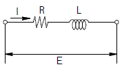
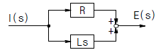
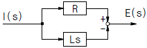
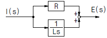
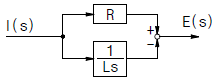
(정답률: 63%)
62. 특성방정식 s2+2ζωns+ω2n=0에서 감쇠진동을 하는 제동비 ζ의 값은?
- ζ ＞ 1
- ζ = 1
- ζ = 0
- 0 ＜ ζ ＜ 1
(정답률: 70%)
63. 다음 그림의 전달함수 Y(z)/R(z)는 다음 중 어느 것인가?
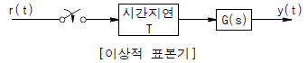
- G(z)z
- G(z)z-1
- G(z)Tz-1
- G(z)Tz
(정답률: 37%)
64. 일정 입력에 대해 잔류편차가 있는 제어계는?
- 비례 제어계
- 적분 제어계
- 비례 적분 제어계
- 비례 적분 미분 제어계
(정답률: 62%)
65. 일반적인 제어시스템에서 안정의 조건은?
- 입력이 있는 경우 초기값에 관계없이 출력이 0으로 간다.
- 입력이 없는 경우 초기값에 관계없이 출력이 무한대로 간다.
- 시스템이 유한한 입력에 대해서 무한한 출력을 얻는 경우
- 시스템이 유한한 입력에 대해서 유한한 출력을 얻는 경우
(정답률: 63%)
66. 개루프 전달함수 G(s)H(s)가 다음과 같이 주어지는 부궤 환계에서 근궤적 점근선의 실수축과 교차점은?
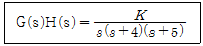
- 0
- -1
- -2
- -3
(정답률: 60%)
67. s3+11s2+2s+40=0 에는 양의 실수부를 갖는 근은 몇개 있는가?
- 1
- 2
- 3
- 없다.
(정답률: 69%)
68. 논리식
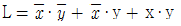
를 간략화한 것은?- x + y
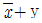
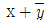
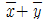
(정답률: 64%)
69. 그림과 같은 블록선도에서 전달함수 C(s)/R(s)를 구하면?
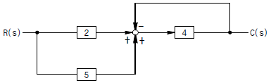
- 1/8
- 5/28
- 28/5
- 8
(정답률: 68%)
70.
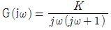
에 있어서 진폭 A 및 위상각 θ는?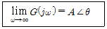
- A=0, θ=-90°
- A=0, θ=-180°
- A=∞, θ=-90°
- A=∞, θ=-180°
(정답률: 59%)
71. R=100Ω, C=30㎌의 직렬회로에 f=60Hz, V=100V의 교류전압을 인가할 때 전류는 약 몇 A 인가?
- 0.42
- 0.64
- 0.75
- 0.87
(정답률: 51%)
72. 무손실 선로의 정상상태에 대한 설명으로 틀린 것은?
- 전파정수 γ은
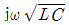
이다. - 특성 임피던스
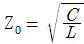
이다. - 진행파의 전파속도
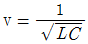
이다. - 감쇠정수 α=0, 위상정수
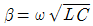
이다.
(정답률: 72%)
73. 그림과 같은 파형의 Laplace 변환은?
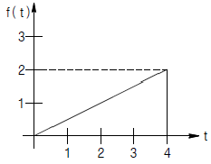
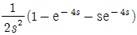
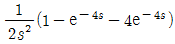
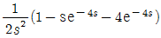
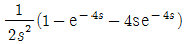
(정답률: 42%)
74. 2전력계법으로 평형 3상 전력을 측정하였더니 한쪽의 지시가 700W, 다른 쪽의 지시가 1400W 이었다. 피상전력은 약 몇 VA 인가?
- 2425
- 2771
- 2873
- 2974
(정답률: 62%)
75. 최대값이 Im인 정현파 교류의 반파정류 파형의 실효값은?
- Im / 2
- Im / √2
- 2Im / π
- πIm / 2
(정답률: 62%)
76. 그림과 같은 파형의 파고율은?
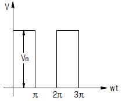
- 1
- 1 / √2
- √2
- √3
(정답률: 50%)
77. 그림과 같이 10Ω의 저항에 권수비가 10:1의 결합회로를 연결했을 때 4단자 정수 A, B, C, D는?
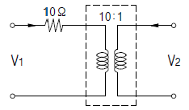
- A=1, B=10, C=0, D=10
- A=10, B=1, C=0, D=10
- A=10, B=0, C=1, D=1/10
- A=10, B=1, C=0, D=1/10
(정답률: 54%)
78. 그림과 같은 RC 회로에서 스위치를 넣은 순간 전류는? (단, 초기조건은 0이다.)
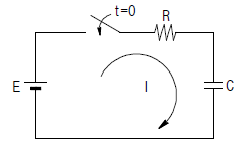
- 불변전류이다.
- 진동전류이다.
- 증가함수로 나타난다.
- 감쇠함수로 나타난다.
(정답률: 54%)
79. 회로에서 저항 R에 흐르는 전류 I(A)는?
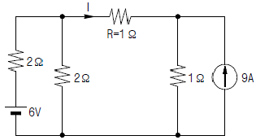
- -1
- -2
- 2
- 4
(정답률: 46%)
80. 전류의 대칭분을 I0, I1, I2, 유기기전력을 Ea, Eb, Ec, 단자전압의 대칭분을 V0, V1, V2라 할 때 3상 교류발전기의 기본식 중 정상분 V1 값은? (단, Z0, Z1, Z2는 영상, 정상, 역상 임피던스이다.)
- -Z0I0
- -Z2I2
- Ea-Z1I1
- Eb-Z2I2
(정답률: 70%)
5과목: 전기설비기술기준 및 판단기준
81. 최대사용전압이 220V인 전동기의 절연내력시험을 하고자할 때 시험전압은 몇 V인가?
- 300
- 330
- 450
- 500
(정답률: 50%)
82. 66kV 가공전선과 6kV 가공전선을 동일 지지물에 병가하는 경우에 특고압 가공전선은 케이블인 경우를 제외하고는 단면적이 몇 mm2 이상인 경동연선을 사용하여야 하는가?(오류 신고가 접수된 문제입니다. 반드시 정답과 해설을 확인하시기 바랍니다.)
- 22
- 38
- 55
- 100
(정답률: 55%)
83. 발전소의 개폐기 또는 차단기에 사용하는 압축공기장치의 주 공기탱크에 시설하는 압력계의 최고 눈금의 범위로 옳은 것은?
- 사용압력의 1배 이상 2배 이하
- 사용압력의 1.15배 이상 2배 이하
- 사용압력의 1.5배 이상 3배 이하
- 사용압력의 2배 이상 3배 이하
(정답률: 55%)
84. 고압 가공전선로의 지지물로서 사용하는 목주의 풍압하중에 대한 안전율은 얼마 이상이어야 하는가?
- 1.2
- 1.3
- 2.2
- 2.5
(정답률: 45%)
85. 다음 그림에서 L1은 어떤 크기로 동작하는 기기의 명칭인가?
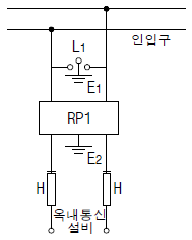
- 교류 1000V 이하에서 동작하는 단로기
- 교류 1000V 이하에서 동작하는 피뢰기
- 교류 1500V 이하에서 동작하는 단로기
- 교류 1500V 이하에서 동작하는 피뢰기
(정답률: 55%)
86. 지중 전선로에 있어서 폭발성 가스가 침입할 우려가 있는 장소에 시설하는 지중함은 크기가 몇 m3 이상일 때 가스를 방산시키기 위한 장치를 시설하여야 하는가?
- 0.25
- 0.5
- 0.75
- 1.0
(정답률: 66%)
87. 최대사용전압 22.9kV인 3상 4선식 다중 접지방식의 지중 전선로의 절연내력시험을 직류로 할 경우 시험전압은 몇 V 인가?
- 16448
- 21068
- 32796
- 42136
(정답률: 45%)
88. 특고압용 타냉식 변압기의 냉각장치에 고장이 생긴 경우를 대비하여 어떤 보호장치를 하여야 하는가?
- 경보장치
- 속도조정장치
- 온도시험장치
- 냉매흐름장치
(정답률: 64%)
89. 금속덕트 공사에 적당하지 않은 것은?
- 전선은 절연전선을 사용한다.
- 덕트의 끝부분은 항시 개방시킨다.
- 덕트 안에는 전선의 접속점이 없도록 한다.
- 덕트의 안쪽 면 및 바깥 면에는 산화 방지를 위하여 아연도금을 한다.
(정답률: 69%)
90. 3.3kV용 계기용 변성기의 2차측 전로의 접지공사는?(관련 규정 개정전 문제로 여기서는 기존 정답인 3번을 누르면 정답 처리됩니다. 자세한 내용은 해설을 참고하세요.)
- 제1종 접지공사
- 제2종 접지공사
- 제3종 접지공사
- 특별 제3종 접지공사
(정답률: 51%)
91. 특고압 옥외 배전용 변압기가 1대일 경우 특고압측에 일반적으로 시설하여야 하는 것은?
- 방전기
- 계기용 변류기
- 계기용 변압기
- 개폐기 및 과전류차단기
(정답률: 59%)
92. 가공 전선로에 사용하는 지지물의 강도계산에 적용하는 갑종 풍압하중을 계산할 때 구성재의 수직 투영면적 1m2에 대한 풍압의 기준으로 틀린 것은?
- 목주 : 588Pa
- 원형 철주 : 588Pa
- 원형 철근콘크리트주 : 882Pa
- 강관으로 구성(단주는 제외)된 철탑 : 1255Pa
(정답률: 65%)
93. 3상 4선식 22.9kV, 중성선 다중접지 방식의 특고압 가공전선 아래에 통신선을 첨가 하고자 한다. 특고압 가공전선과 통신선과의 이격거리는 몇 cm 이상인가?
- 60
- 75
- 100
- 120
(정답률: 29%)
94. 특고압 가공전선이 도로 등과 교차하는 경우에 특고압 가공전선이 도로 등의 위에 시설되는 때에 설치하는 보호망에 대한 설명으로 옳은 것은?
- 보호망은 제3종 접지공사를 한다.
- 보호망을 구성하는 금속선의 인장강도는 6kN 이상으로 한다.
- 보호망을 구성하는 금속선은 지름 1.0㎜ 이상의 경동선을 사용한다.
- 보호망을 구성하는 금속선 상호의 간격은 가로, 세로 각 1.5m 이하로 한다.
(정답률: 43%)
95. 옥내에 시설하는 고압용 이동전선으로 옳은 것은?
- 6㎜ 연동선
- 비닐외장케이블
- 옥외용 비닐절연전선
- 고압용의 캡타이어케이블
(정답률: 63%)
96. 교통이 번잡한 도로를 횡단하여 저압 가공전선을 시설하는 경우 지표상 높이는 몇 m 이상으로 하여야 하는가?
- 4.0
- 5.0
- 6.0
- 6.5
(정답률: 54%)
97. 방전등용 안정기를 저압의 옥내배선과 직접 접속하여 시설할 경우 옥내전로의 대지전압은 최대 몇 V 인가?
- 100
- 150
- 300
- 450
(정답률: 67%)
98. 사용전압이 22.9kV인 특고압 가공전선이 도로를 횡단하는 경우, 지표상 높이는 최소 몇 m 이상인가?
- 4.5
- 5
- 5.5
- 6
(정답률: 58%)
99. 관공숙박업 또는 숙박업을 하는 객실의 입구등에 조명용 전등을 설치 할 때는 몇 분 이내에 소등되는 타임스위치를 시설하여야 하는가?
- 1
- 3
- 5
- 10
(정답률: 63%)
100. 철근 콘크리트주를 사용하는 25kV 교류 전차선로를 도로등과 제1차 접근 상태에 시설하는 경우 경간의 최대한도는 몇 m 인가?(오류 신고가 접수된 문제입니다. 반드시 정답과 해설을 확인하시기 바랍니다.)
- 40
- 50
- 60
- 70
(정답률: 36%)